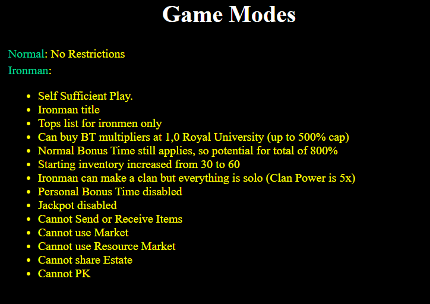
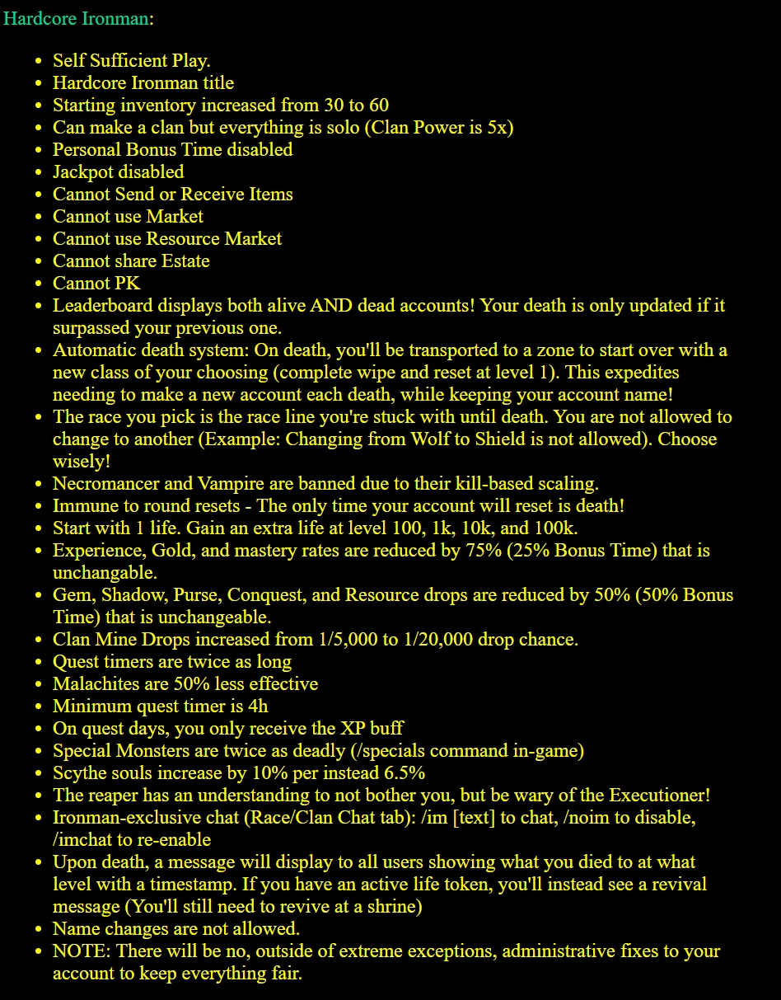

Overview
Shimlar consists of several different game modes, which provide uniquely different ways to play the game.
Regular
This is your standard account and how you normally play the game. Nothing is unavailable to you (such as trading and PKing), Clan power is at normal levels, and you are affected by Bonus Time and Personal Bonus Time.
Ironman

Are you a loner? Don't like interacting with anyone else? Want to be entirely self-sufficient? Well, Ironman is for you!
To play this mode, select it at the character selection screen under "Game Modes". By default, a regular account is selected.
Playing as an ironman has various advantages and disadvantages, that is all listed in the INFO link right by the game selection.
To go over each one in a little more detail:
- Self Sufficient: No help to your character other than your own clicking power.
- Ironman Title: Through the command
/titles, you can unlock a golden ironman/ironwoman title immediately to use (in-game, do/settitle 101) - Tops List for ironman only: You have your own leaderboard, to compare your progress to other ironman accounts
- BT Multipliers: Ironman accounts do not have access to PBT, but can go to Royal University to spend gold to upgrade personal BT values to apply to themselves, up to a 500% bonus.
- Normal BT Applies: Regular BT can go up to 300%, so combined with your PBT you can potentially hit 800% bonuses on everything.
- Starting Inventory: You start with twice the inventory space as normal accounts!
- Ironman Clan: While you fly solo, your clan power is multiplied by 5x to compensate. This will allow you access all upgrades eventually.
- PBT Disabled: As mentioned, your PBT is through the BT multipliers, so normal PBT is disabled.
- Jackpot Disabled: You cannot contribute or win from the Jackpot at all. Reaper deaths just go into the void!
- Cannot's: You're flying solo, so Trading in any way is disabled and you cannot PK or get PK'd.
Hardcore Ironman

Are a loner AND a masochist? Then the hardcore mode is for you!
To play this mode, select it at the character selection screen under "Game Modes". By default, a regular account is selected.
Playing as a Hardcore Ironman has various advantages and disadvantages, that is all listed in the INFO link right by the game selection.
The game has a much steeper difficulty, you only have a maximum of 5 lives, and a number of restrictions.
Vampire and Death classes are the only ones banned in the format due to their kill-based mechanics. Scythe was reworked and unbanned in late 2025 for similar reasons.
- Vampire blood paragon could just increase the kill threshold significantly (7,500 kills for +1/+1 to 50k kills or something of that nature) or reworked to something different.
- Death is harder to rework as it is tied to summons and the most likely scenario is making summons several times more expensive but will weight options in the future.